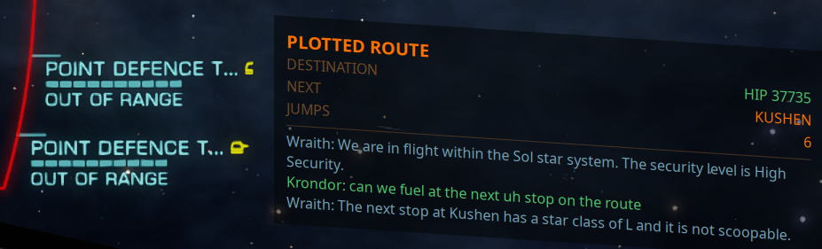
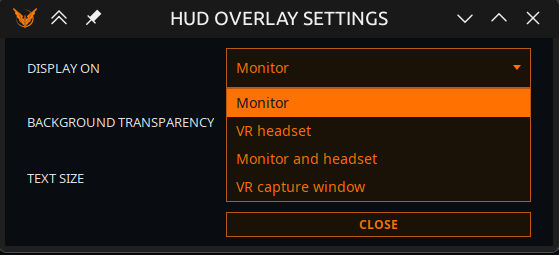

HUD-Overlay
Ein immer im Vordergrund liegendes Overlay, das dein aktuelles Ziel und dein Gespräch mit Vega auf den Bildschirm bringt — ins Spielfenster oder in ein VR-Headset.

Das Overlay läuft in einem eigenen Prozess und konkurriert daher weder mit dem Spiel noch mit der App um den Oberflächen-Thread.
Die Karte ist an der Geometrie des Cockpits ausgerichtet statt rechtwinklig zum Monitor, sie neigt sich also so, wie sich die Schiffspanels an dieser Stelle des Bildschirms neigen — verschiebst du sie, ändert sich die Neigung mit. Ihre Zeilen sind schräge Linien; deshalb kann ein Wert spürbar tiefer sitzen als sein Etikett: lies jede Zeile entlang der Schräge, so wie die Anzeigen des Spiels daneben. Wie tief ein Wert scheinbar fällt, hängt auch von der TEXTGRÖSSE ab — die Neigung ist vom Cockpit vorgegeben, kleinerer Text bedeutet kürzere Zeilen, und derselbe Abfall kreuzt mehr davon.
Schalte es mit OVERLAY ANZEIGEN im Vega-Reiter ein und richte es mit OVERLAY-EINSTELLUNGEN daneben ein. Die App merkt sich, ob du es angelassen hast, und stellt es beim nächsten Start wieder her.
Fehlt die Overlay-Datei in der Distribution, meldet der Schalter das im Diagnoseprotokoll. Er täuscht kein Overlay vor, das es nicht gibt.
Was es zeigt
Eine Zielkarte
Es passt nur eine Karte, also zeigt das Overlay das Wichtigste, was du gerade tust, und wechselt von selbst, wenn sich das ändert. Es gibt nichts einzustellen.
Arbeit, die du angenommen hast, schlägt immer Arbeit, die die App vorschlägt, in dieser Reihenfolge:
| Rang | Karte | Erscheint, wenn |
|---|---|---|
| 1 | VERNICHTUNGSAUFTRAG | Du Massaker-Missionen fliegst — benötigte Abschüsse, Stapel, Belohnung |
| 1 | MISSION | Du Missionen angenommen hast — Ziel, Fracht oder Passagiere, Ablauf und Belohnung der hervorgehobenen, plus der Wert des restlichen Stapels |
| 2 | HANDELSROUTE | Eine Handelsroute geplottet ist — Ware, Kauf, Verkauf, Marge, Etappe n von m |
| 2 | FRACHTCHANCE | Vega für freien Laderaum auf deiner Reise ein lohnendes Kauf-/Verkaufspaar gefunden hat |
| 2 | BAUSTELLE | Du für einen Kolonisierungsbau lieferst — Fortschritt, Ausstehendes und was du beim nächsten Flug laden sollst |
| 2 | WARE GEFUNDEN / EINKAUFSLISTE / FRACHT VERKAUF | Eine Warensuche einen Markt gefunden hat und eine Route dorthin geplottet ist — was zu kaufen (oder verkaufen) ist, Bestand und Preis |
| 3 | BERGBAU | Du Abbauziele hast, eine Raffinerie eingebaut ist und du nicht im Supercruise bist — Laderaum, Drohnen, Ziele |
| 3 | EXOBIOLOGIE | In diesem System noch Gattungen zu beproben sind — nur solange Entdeckungen ansagen an ist |
| 3 | KOPFGELDJAGD | Du in einer Ressourcenabbaustätte bist — Art der Stätte, Kopfgelder im Laderaum, Abschüsse |
| 3 | KONFLIKTZONE | Du in einer Konfliktzone bist — Intensität, deine Seite, Kampfanleihen in der Hand |
| 3 | GEPLANTE ROUTE | Eine Route gesetzt ist — Ziel, nächstes System, verbleibende Sprünge |
Die Karte geplante Route bekommt einen genaueren Titel, wenn Vega das Ziel für dich ermittelt hat und die Route noch dorthin führt: MATERIALHÄNDLER, TECHNOLOGIEHÄNDLER, INTERSTELLARE FAKTOREN, VISTA GENOMICS, AUFTANKEN oder AUSRÜSTUNG, ergänzt um Station und Typ. Ein Plot woandershin löscht dieses Detail, sodass ein alter Auftrag die Karte nie an sich reißen kann.
Die Missions-Karte hebt die Mission hervor, deren Ziel das Ende deiner geplotteten Route ist; sonst die, die am frühesten abläuft.
Das Gespräch
Unter der Karte tippt das Overlay den Austausch mit, während er passiert — was du gesagt hast, Vegas Antwort und den Funkverkehr —, jeweils in eigener Farbe. Nützlich, wenn du mit leiser Stimme spielst.
Overlay-Einstellungen

HINTERGRUND-TRANSPARENZ (0–100 %) und TEXTGRÖSSE (75–200 %) sind absichtlich zwei getrennte Regler. Ein einzelner „Deckkraft“-Regler würde den Text mit dem Hintergrund ausblenden — genau das macht ein abgedunkeltes Overlay über einer hellen Planetenoberfläche unlesbar. Blende den Hintergrund aus; lass den Text in Ruhe.
Textfarben
Ein Farbwähler pro Rolle, damit du das Overlay an deine Cockpitfarben oder deine Augen anpassen kannst:
Auftragstitel · Gut · Warnung · Kritisch · Beschriftungen · Deine Worte · Schiffs-KI · Funkverkehr
Farben zurücksetzen setzt jede Farbe auf den Auslieferungswert des Overlays zurück.
ANZEIGE AUF
| Modus | Was er tut |
|---|---|
| Monitor | Ein Desktopfenster. Der Standard. Die Karte neigt sich passend zum Cockpit, und die Neigung ändert sich mit der Position |
| VR-Headset | Ein SteamVR-Overlay. Braucht laufendes SteamVR. Ist VR nicht verfügbar, fällt es auf ein Desktopfenster zurück, damit du nie ohne dastehst |
| Monitor und Headset | Beides gleichzeitig, mit identischen Daten. Nützlich, wenn du in VR fliegst, aber vom Monitor streamst oder aufnimmst |
| VR-Aufnahmefenster | Ein schlichtes, flaches, deckendes Fenster, das ein Aufnahmewerkzeug anheften kann |
Zum VR-Aufnahmefenster
Dieser Modus spricht nicht mit SteamVR. Starte dein Aufnahmewerkzeug — Desktop+, OVR Toolkit oder Virtual Desktop — und wähle das Fenster „EliteIntel HUD (VR capture)“.
Warum es das gibt: Der SteamVR-Modus übergibt dem Compositor pro getipptem Zeichen eine volle Textur, und auf einem gestreamten Headset kostete das nachweislich Bildrate. Ein Aufnahmewerkzeug holt sich das Fenster auf der GPU nach eigenem Takt und bietet Platzierungs- und Krümmungsoptionen, die diese App nicht hat.
Es ist ein eigener Modus statt „richte dein Aufnahmewerkzeug auf das Monitor-Fenster“, weil jenes Fenster geneigt, durchsichtig und ein Werkzeugfenster ist — und solche Fenster blenden Aufnahmeauswahlen ganz aus.
POSITION IM HEADSET
Acht Platzierungen: Oben, Oben rechts, Rechts, Unten rechts, Unten, Unten links, Links, Oben links.
Das HUD steht fest vor deinem Sitzplatz und folgt nicht dem Kopf. Die gewählte Richtung wird von deiner Blickrichtung nach SteamVRs Sitzposition zurücksetzen gemessen — neu zentrieren bewegt das HUD also mit dem Cockpit, und genau das willst du. Schaust du weg, bleibt das HUD, wo du es gelassen hast, genau wie ein echtes Panel.
In einer anderen Sprache lesen
Kartenbeschriftungen folgen der Sprache der App, und Zahlen werden so gruppiert, wie diese Sprache es tut. Namen aus dem Spiel — Systeme, Stationen, Waren — bleiben unverändert.
Community 👉Matrix👈